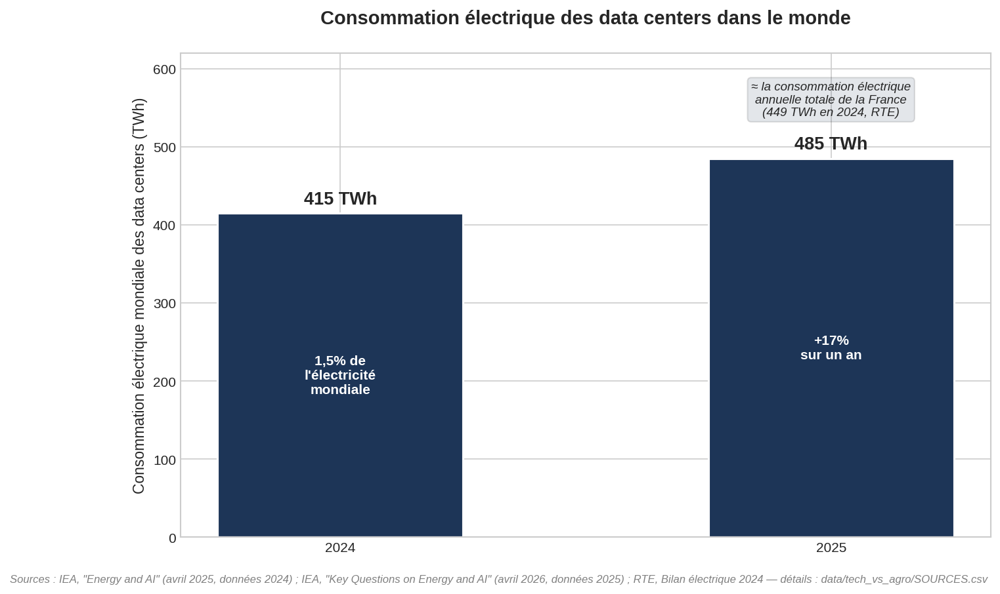
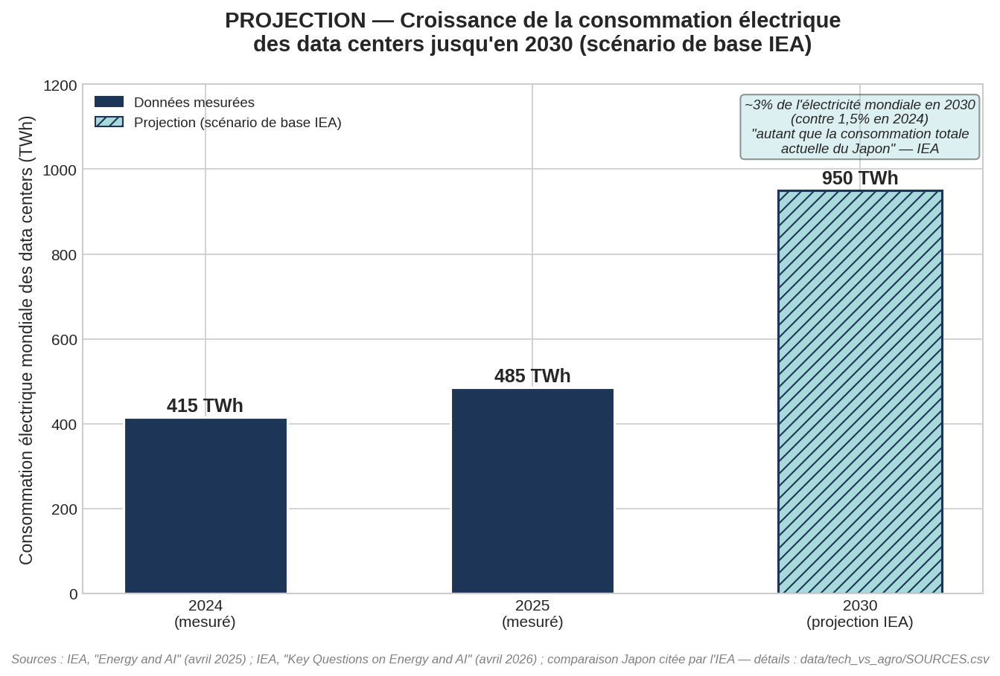
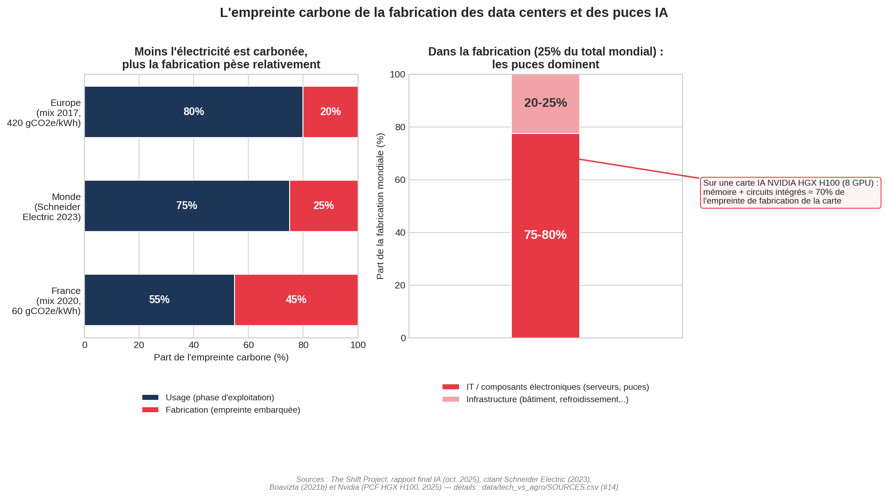

Étude en cours — l'empreinte électrique des data centers, chiffres à l'appui
Une première version de cette page comparait l'impact du numérique à celui de l'agroalimentaire. Cette comparaison a été abandonnée : elle mettait face à face deux secteurs aux périmètres très différents, ce qui n'apportait pas grand-chose.
L'objectif ici n'est pas de trouver le chiffre le plus flatteur (ou le plus accusateur) pour la tech, mais de montrer la réalité physique telle qu'elle est mesurable. Ce qui suit n'est qu'une première brique : la consommation électrique des data centers, parce que c'est le seul morceau du numérique pour lequel j'ai trouvé des chiffres récents et solides jusqu'ici. Le reste — fabrication des appareils, extraction de métaux et terres rares, réseaux télécom, e-déchets — n'est pas encore traité. Cette page sera complétée au fur et à mesure que ces chiffres seront vérifiés.
Périmètre couvert pour l'instant : les data centers uniquement (pas les smartphones, ordinateurs ni réseaux télécom). Toutes les données viennent de l'Agence Internationale de l'Énergie (IEA).
En 2025, les data centers du monde entier ont consommé 485 TWh d'électricité, soit une hausse de 17 % en un an. À titre de comparaison, la consommation électrique annuelle totale de la France (ménages, industrie, tout compris) était de 449 TWh en 2024 — un ordre de grandeur comparable, même si les années de référence diffèrent.

Source : IEA, "Energy and AI" (2025) et "Key Questions on Energy and AI" (2026) ; RTE, Bilan électrique 2024
L'IEA projette une consommation de 950 TWh en 2030 dans son scénario de base, portée notamment par l'intelligence artificielle. L'IEA formule elle-même la comparaison : ce niveau équivaudrait à la consommation électrique totale actuelle du Japon.

Source : IEA, "Energy and AI" (2025) et "Key Questions on Energy and AI" (2026)
Jusqu'ici, cette page ne couvrait que l'électricité consommée par les data centers en fonctionnement. Mais fabriquer un data center (serveurs, puces, bâtiment, refroidissement) a aussi un coût carbone, distinct de celui de son usage.
Au niveau mondial, la répartition est d'environ 75 % pour l'usage et 25 % pour la fabrication (Schneider Electric, 2023). Mais cette proportion dépend directement de l'intensité carbone de l'électricité locale : moins l'électricité est carbonée, plus la fabrication pèse relativement lourd, puisque l'usage émet alors moins. En France, avec un mix électrique très décarboné, la fabrication grimperait jusqu'à 45 % de l'empreinte totale (contre 20 % en Europe sur une hypothèse de mix 2017 plus carboné) — un chiffre à garder en tête si on installe des data centers en France au nom de son électricité bas-carbone : ça déplace le problème vers la fabrication, ça ne le supprime pas.
Dans cette part fabrication, ce sont les composants électroniques — pas le bâtiment ni le refroidissement — qui dominent largement : 75 à 80 % au niveau mondial. Sur une carte IA spécifiquement (NVIDIA HGX H100, la carte à 8 GPU utilisée pour l'entraînement des grands modèles), la mémoire et les circuits intégrés représentent à eux seuls environ 70 % de l'empreinte de fabrication de la carte.

Source : The Shift Project, rapport final IA (octobre 2025), citant Schneider Electric (2023), Boavizta (2021b) et Nvidia (PCF HGX H100, 2025)
L'eau. Un graphique sur la consommation d'eau des data centers était prévu, mais je n'ai pas de donnée fiable à publier ici : les entreprises qui exploitent les data centers ne communiquent pas le détail de leur consommation d'eau. Le chiffre le plus cité dans la presse ("IEA : 560 milliards de litres en 2023") s'est révélé introuvable dans le rapport IEA lui-même après vérification directe. Une autre source (UNU-INWEH, institut de recherche de l'ONU) donne un chiffre environ 8 fois supérieur pour 2030, mais sans méthodologie vérifiable. Même le rapport final d'octobre 2025 de The Shift Project sur l'IA et les centres de données — le plus complet et le mieux sourcé que j'aie trouvé sur le sujet — ne donne aucun chiffre mondial de consommation d'eau, seulement une donnée d'exposition au risque (45 % des data centers mondiaux situés dans des bassins fluviaux à stress hydrique élevé, Nature Finance 2025), ce qui n'est pas une consommation. The Shift Project le formule ainsi dans sa conclusion : "le manque de transparence (voire l'opacité organisée) des acteurs dominants du domaine de l'IA [...] rend difficile toute évaluation quantitative".
Le reste du numérique. La répartition usage/fabrication des data centers est maintenant couverte ci-dessus, mais cette page ne dit encore rien sur l'extraction des métaux et terres rares en amont (tonnage absolu, pas seulement une proportion), les réseaux télécom, ou les e-déchets en fin de vie. Ce sont potentiellement des postes lourds, pas encore chiffrés ici. Cette page sera mise à jour au fur et à mesure que ces recherches avancent.